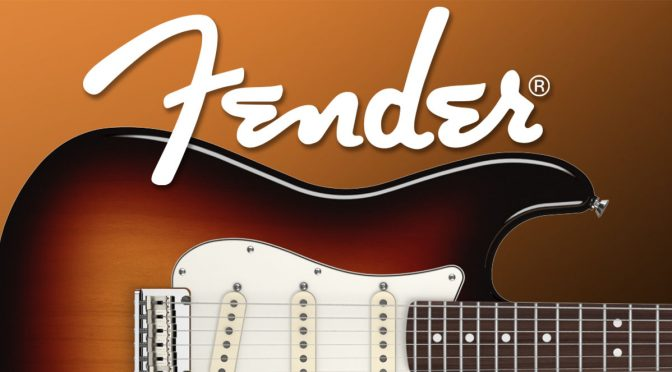
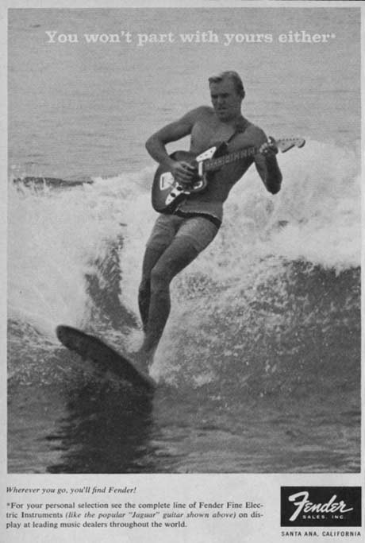
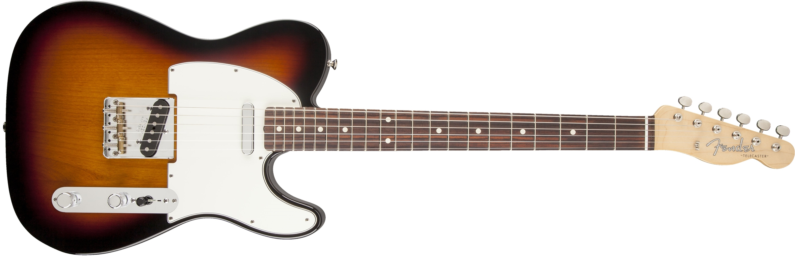
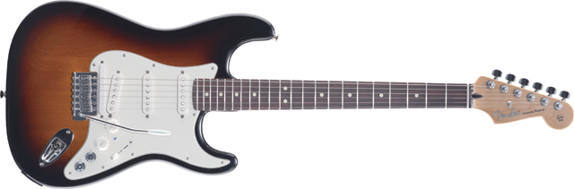
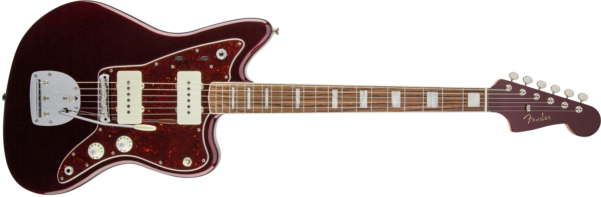
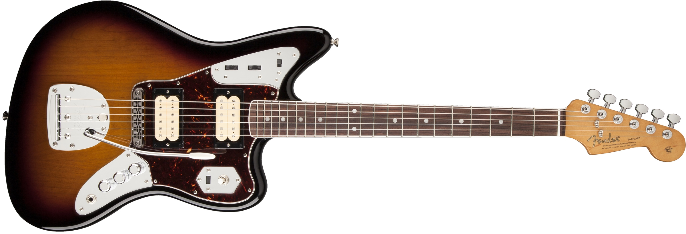
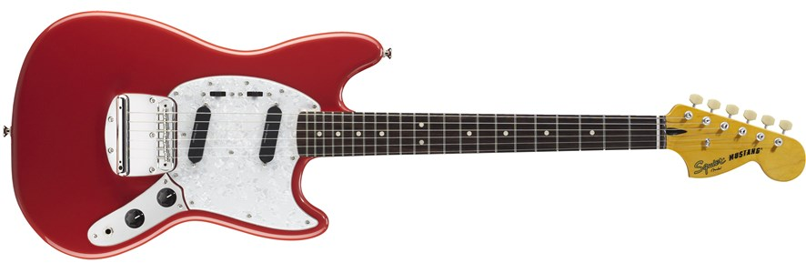

The Fender Musical Instruments Corporation, known by many as just "Fender", is a manufactuar of stringed instruments and amplifiers. Founded in Fullerton, California 1946 by Clarence Leonidas "Leo" Fender, Fender has become one of the leading producers of musicial instruments, especially their solid body electric guitars. In the late 1940's there were only a few electic guitar manufactures, but Fender's new solid body electric guitars, starting with the Telecaster, provided durability, versitility, and afordability.
Believe it or not, Leo Fender was not a musician, he was just a very qualified electronics technician with a keen ability to develop instruments with percesion, attenton to detail, quick assembly, and mass production and distribution like no one had ever seen. With top notch marketing strategies that paired fun and popular activites, like surfing, to playing guitar, and with great photography to tie it all together, Fender was able to connect to a huge demographic.

Although Fender does produces more than just electric guitars, a vast majority of their sucees can be attributed to their solid budy electric guitars. The first design was the Telecaster, then the Stratocaster (which is considered their most popular brand), next came the Jazzmaster, then the Jaguar, and finally the Mustang. Each one has had a unique influence on music since their development.
Here is a list of Fender's solid body electric guitars and their specs.
| Guitar Model | Year Created | Body | Neck | Fretboard | Scale |
|---|---|---|---|---|---|
| Telecaster | 1950 | Alder, Ash, Poplar, Pine, or Basswood | Maple | Maple or Rosewood | 25.5 in |
| Stratocaster | 1954 | Alder, Ash, Poplar, or Basswood | Maple | Maple, Rosewood, Ebony, or Pao Ferro | 25.5 in |
| Jazzmaster | 1958 | Alder, Ash, or Basswood | Maple | Rosewood | 25.5 in |
| Jaguar | 1962 | Alder or Basswood | Maple | Rosewood | 24 in |
| Mustang | 1964 | Poplar, Alder, or Ash | Maple | Rosewood or Maple | 24 or 22.5 in |
Because of Fender's quality product, many notable artists have used their guitars to make some of the most monumential and influential music to date. Whether it was Jimi Hendrix playing his white Stratocaster at Woodstock, or Kurt Cobain playing his Mustang when he was revolutionizing the grung scence in the 90's, there is an undeniable association with Fender guitars and great music.
Fender has, and continues to play a very important hand in shaping the way music has developed, and in turn, has played a role in determining how music has affected our world. The Fender Music Foundation believes that "music participation is an essential element in the fabric of an enduring society," and these five iconic guitars have allowed people to activly participate in music to continually accomplish this mission.
For more about Fender, and a full list of artists using Fender Products, you may visit: Fender Artists.